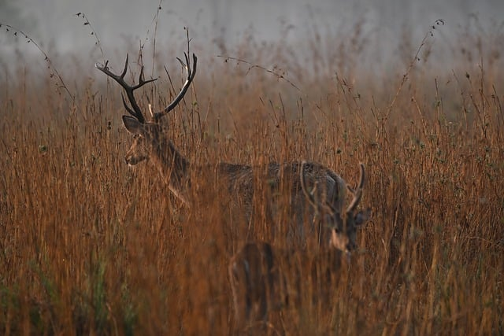
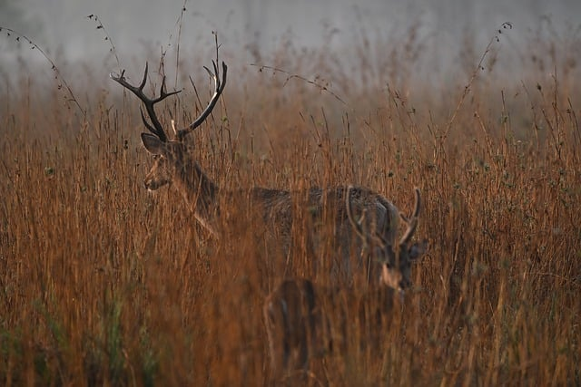

우리함께 어린이집을 소개합니다
안전한 환경
아이들의 안전을 최우선으로 생각하는 친환경 시설과 체계적인 안전 관리 시스템을 갖추고 있습니다.
전문적인 교사진
따뜻한 마음과 풍부한 경험을 가진 보육교사들이 아이들 개개인의 발달을 지원합니다.
건강한 급식
신선하고 영양가 높은 식재료를 사용하여 아이들의 건강한 성장을 돕는 균형 잡힌 식단을 제공합니다.
아이들의 꿈을 키우는 교육 프로그램

창의 미술 프로그램
다양한 재료를 탐색하고 표현하며 아이들의 창의력과 상상력을 자극합니다.

생태 자연 체험
텃밭 가꾸기, 숲 체험 등 자연과 교감하며 생명의 소중함을 배웁니다.

신나는 음악 놀이
다양한 악기를 연주하고 노래하며 리듬감과 즐거움을 느낍니다.
행복한 순간들: 활동 앨범


 


자주 묻는 질문
입소 대기 신청은 어떻게 하나요?
임신육아종합포털 아이사랑(www.childcare.go.kr)에서 온라인으로 신청하실 수 있습니다. 자세한 절차는 입소 안내 페이지를 참고해주세요.
특별활동은 어떤 것들이 있나요?
저희 어린이집은 표준보육과정에 따라 기본 프로그램을 운영하며, 추가적인 특별활동은 학부모님들의 동의를 얻어 진행합니다. 현재는 영어, 체육 활동이 있습니다.
차량 운행을 하나요?
안전상의 이유로 현재는 차량을 운행하고 있지 않습니다. 학부모님께서 직접 등·하원 지도를 부탁드립니다.
오시는 길 및 입소 문의
주소: 서울특별시 행복구 사랑동 123-45
전화: 02-1234-5678
운영시간: 평일 07:30 ~ 19:30
궁금한 점이 있으시면 언제든지 편하게 연락주세요.